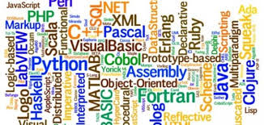

Linkes to Pages of This Research
An introduction to programming languages
- Through research on programming languages and their uses, it can be said that there are special languages used in the programming process called programming languages.
- These languages carry many specific rules as well as vocabulary to guide the computer to carry out tasks, and each language contains a set of special words.
- There is also a certain way of writing in order to determine how to organize the program's orders, and programming languages can be classified according to use, and among the uses is what we will provide today.
Uses of programming languages
- The field of applications and software: It is one of the programming languages that are used in developing programs, including web browsers. Among the examples are the C language, C Sharp and C Plus Plus.
- The field of artificial intelligence: Artificial intelligence enters in several fields, including video games, automatic dialogue programs, and others in various fields, in addition to the C language and Python.
- The field of databases: It has been reported regarding this field of programming that programming languages can be used in a large and sophisticated manner in this field, as they are used in order to create many databases in addition to amending them, and specialists have confirmed that it is among these languages for programming In the field of databases Sequel and My Sequel additionally de Pace.
- The field of video games: One of the most well-known programming languages in the current era, which specialists have been able to work on and introduce in this field, as it has become a major role in the field of entertainment, and in this field C Sharp language is used in addition to the use of C language and language C Plus Plus, all this in addition to the Dark Basic language.
- Website creation: Among the languages that are used in the development of websites is the HTML, PHP, Javascript and markup language which is considered to be this extensible language along with the Python language.
- Identification programs programming: One of the programming languages that is used in the field of writing identification programs with different devices.
- There is a difference in the text from the program as it executes automatically without resorting to entering the stage of compilation, and among the languages that are used in writing it is Bash, Batch, Perel, and Python, and this was a search for programming languages and their uses.
